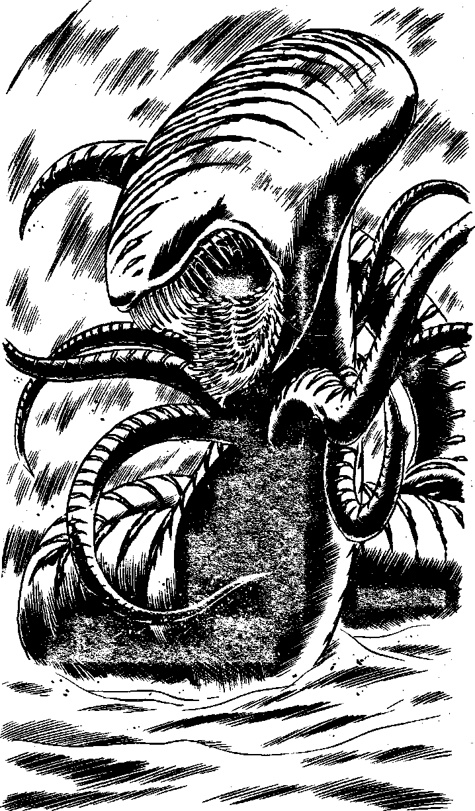

174
When you are close you switch on the computer graphic delineator. This interprets your microbeam radar and renders it visually. It is almost as good as the real thing. The rack segment is a large translucent white triangle, with a hole in its middle. Three tiny objects are embedded in its corners. The whole thing is about the size of your head. Reaching down you feel about, using the touch sensors on the fingertips of your battlesuit. At last you have it. You transfer it to the iron grip of your mechanical assistor arm, and begin to walk back to Falcon's Wing. Suddenly your radar picks up a large blip on the edge of your face plate display. It is moving directly towards you at great speed. You realise it will reach you before you can get to Falcon's Wing. Suddenly, the computer graphic delineator cuts in and a hideous sight fills your face plate and you step back involuntarily, horrified. Some creature, utterly alien, is almost upon you. It has a long head, completely smooth, the skull lengthened to hang over the back. It has no eyes, the mouth like that of an Earth shark. The head lies on a long and sinuous body, like a huge snake, but with tentacles. It is enormous and will reach you in a few seconds, what will you do? Will you:
| Launch one of your rockets at it? | Turn to 183 |
| Fire your Particle Disruptor at it? | Turn to 208 |
| Try to control it using Power of Will? | Turn to 219 |
| Try to frighten it off in some way? | Turn to 228 |